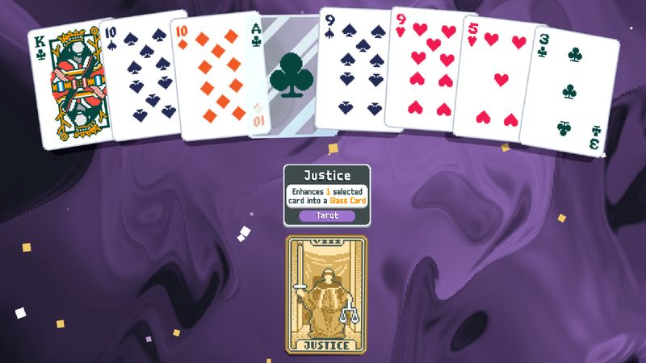
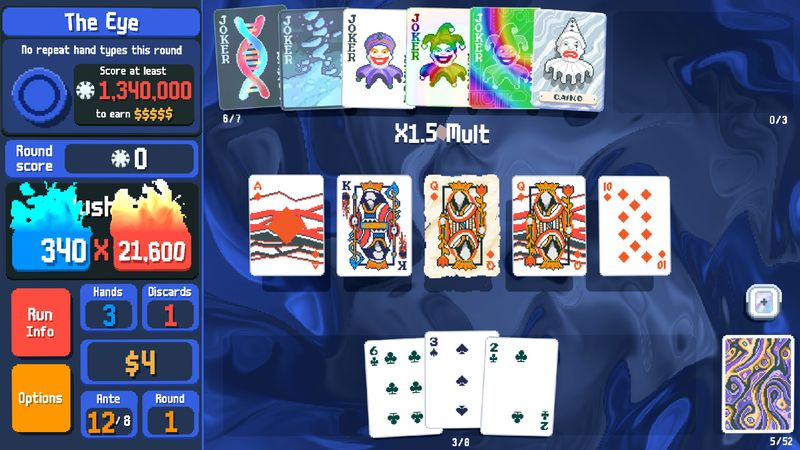

The thirty-second version
The pause menu is a coping mechanism.
Turns out we've been playing the wrong poker for thirty years.
Balatro is the most 'one more run' any of us has ever felt for a solo game. It looks like a screensaver, it plays like a slot machine wired to a spreadsheet, and by hour three you'll be seeing multipliers when you close your eyes. It's brilliant. Do not start it on a school night.
Okay, what is this thing?
You play a hand of poker. It scores 240. You buy a Joker. Your next hand scores 8,900. You start laughing, quietly, into your hands, at half past midnight. That is our shared review. Two of us have finished the game and one of us cannot stop starting new decks, and none of us is sure who's winning.
Under the hypnosis is a really careful design. Every Joker is a rule change, every deck has different constraints, and the boss blinds force you to actually vary your play. It's the perfect shape for a portable roguelike: quick runs, deep meta, no story to keep track of. The soundtrack is one hypnotic loop that we now hear in the supermarket.


Why it escaped the group chat
- You're playing poker hands, but every Joker card can rewrite what a hand means and does.
- Boss blinds impose weird constraints that make your best strategy suddenly the worst one.
- It's the work of a single developer under the name LocalThunk.
Three dads enter
01
Dad Who Skipped the Tutorial
I genuinely thought a straight flush was a Balatro invention.
I didn't know the hands going in and I don't fully know them now, but I understand multipliers and I understand greed, and those are the two required skills. I've got a favourite Joker I refuse to explain and I only ever play high card decks. The game does not care. It just keeps rewarding me.
02
The Descent Guy
There is a mathematically correct move and it is 'buy the mult'.
I mapped the Joker interactions on a whiteboard. Then I discovered that half the fun is watching a stupid build overperform. Now I run joke decks on purpose and still hit high antes more consistently than the other two. My current thesis: Balatro is a stealth systems-design masterclass and everyone owes it to themselves to read the wiki once.
03
Normal-ish Dad
Runs are short. Sessions are anything but.
Individual hands take a minute. A full run takes about half an hour. You can do a run in a single sitting, and then you don't. I've put more hours into this than any other game this year and I could not tell you when. My one honest note: if you're prone to 'just one more' behaviour, this is the worst possible game and also the best possible game.
Who it is for and what to watch
Invite these people
- Roguelike fans who have never once looked at a poker book
- Anyone with a commute or a baby that naps unpredictably
- Spreadsheet people who want a spreadsheet that fights back
Dad caveats
- You will lose several evenings and blame the game correctly
- Late runs can drag if you get a bad Joker shop opening
- The main song will haunt you for the rest of the year
Receipts
All three of us have played it on PC across the year, two of us have won runs on higher stakes. Facts checked against the game's official Steam listing.